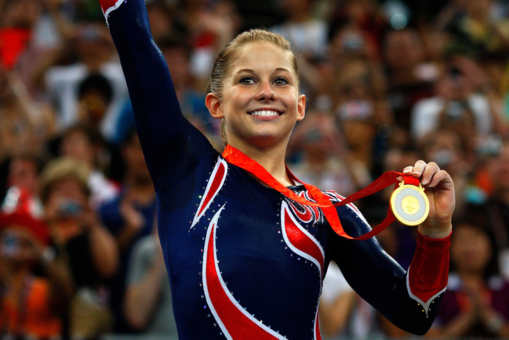
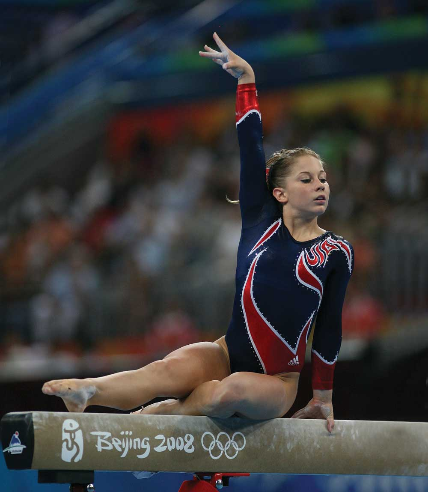

Click to see the different milestones in Shawn Johnson's Gymnastics Career
Shawn Johnson is a now-retired gymnast who was part of the USA Women's Gymnastics team in 2008 Beijing Olympics. Shawn helped bring home an Olympic Gold Medal with her impressive performance on the balance beam. She inspired many young gymnasts with her passion for the sport and incredible skill.
Photo by Cameron Spencer/Getty Images
In the 2007 World Championships in Germany, Shawn amazed the crowd with her routines, and came home with a gold medal on the floor exercise, a silver medal on the balance beam, and a second gold medal in the all-around event. Her performance in this competition put her on the map as one of the leading gymmnasts in the entire world.
Video by Matthias Bramkamp vom Kunstturnteam Oberhausen.
At the age of 16, Shawn attended and participated in her first ever Olympic games. She represented the USA and brought home a gold medal in the balance beam final event, as well as a silver medal in the all-around and floor event. Following the games, she took a two year hiatus before returning to training in hopes of preparing for the 2012 Olympic Games.
Retrieved from https://www.ighof.com/inductees/2019_Shawn_Johnson.php
Not long before the 2012 Olympic Games, Shawn announced her retirement from gymnastics due to injury and other reasons. In 2015, she got engaged to former NFL-player Andrew East, and they got married in April 2016. Shawn and Andrew have three children: Hazel, Jett, and Bear. The former athletes have been focusing on their family, and often post on social media platforms such as YouTube and Tiktok.

Photo by Angeline Jane Bernabe